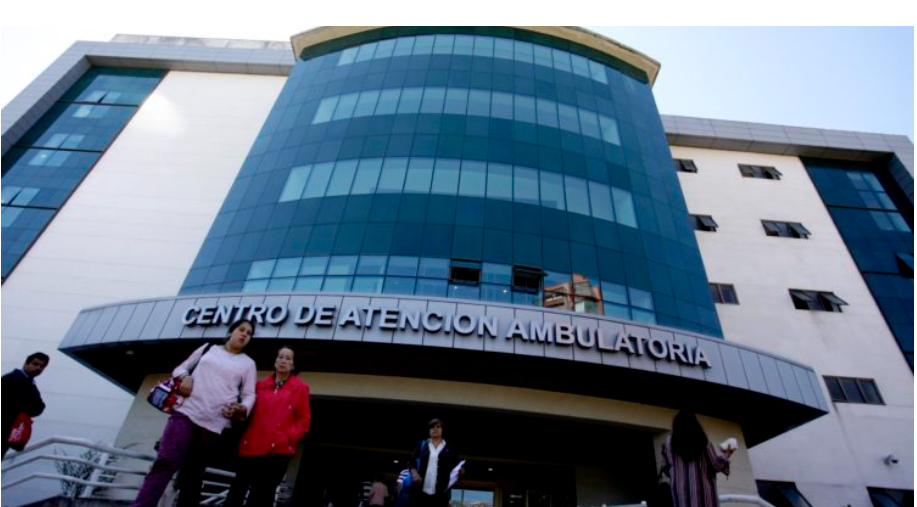

Brotes de covid en Hospital Regional de Concepción suman 4 fallecidos: contagiados ascienden a 112
Noticias

A raíz del brote de covid-19 reportado el lunes 23 en el Hospital Regional de Concepción, región del Bío Bío, el seremi de Salud confirmó que las cifras de contagiados y fallecidos aumentaron. La autoridad de Salud, Héctor Muñoz, confirmó que el número de contagiados tras estos brotes en el recinto asistencial asciende a 112, y 40 casos se mantienen activos. En total son 6 brotes al interior del Hospital, que incluyen el sector de medicina, originado en la sala 45 y 43. Muñoz, indicó que al día de hoy jueves ya son 4 las personas fallecidas a raíz de dichos brotes..
Volver al inicio
Atras